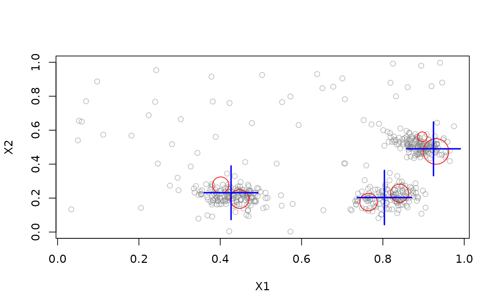

predict() for data stream mining tasks DST.
Usage
# S3 method for class 'DST'
predict(object, newdata, ...)
# S3 method for class 'DSC'
predict(
object,
newdata,
type = c("auto", "micro", "macro"),
method = "auto",
...
)Arguments
- object
The DST object.
- newdata
The points to make predictions for as a data.frame.
- ...
Additional arguments are passed on.
- type
Use micro- or macro-clusters in DSC for assignment.
- method
assignment method
"model"uses the assignment method of the underlying algorithm (unassigned points returnNA). Not all algorithms implement this option."nn"performs nearest neighbor assignment using Euclidean distance."auto"uses the model assignment method. If this method is not implemented/available then method"nn"is used instead.
Value
A data.frame with columns containing the predictions. The columns depend on the type of the data stream mining task.
See also
Other DST:
DSAggregate(),
DSC(),
DSClassifier(),
DSOutlier(),
DSRegressor(),
DST(),
DST_SlidingWindow(),
DST_WriteStream(),
evaluate,
stream_pipeline,
update
Other DSC:
DSC(),
DSC_Macro(),
DSC_Micro(),
DSC_R(),
DSC_SlidingWindow(),
DSC_Static(),
DSC_TwoStage(),
animate_cluster(),
evaluate.DSC,
get_assignment(),
plot.DSC(),
prune_clusters(),
read_saveDSC,
recluster()
Examples
set.seed(1500)
stream <- DSD_Gaussians(k = 3, d = 2, noise = .1)
dbstream <- DSC_DBSTREAM(r = .1)
update(dbstream, stream, n = 100)
plot(dbstream, stream, type = "both")

# find the assignment for the next 100 points to
# micro-clusters in dsc. This uses the model's assignment function
points <- get_points(stream, n = 10)
points
#> X1 X2 .class
#> 1 0.7749067 0.2326122 1
#> 2 0.8804203 0.5344439 2
#> 3 0.9093005 0.5464436 2
#> 4 0.4071260 0.2380330 3
#> 5 0.8198741 0.1579358 1
#> 6 0.8767592 0.4822844 2
#> 7 0.3703785 0.2400410 3
#> 8 0.9247680 0.5104870 2
#> 9 0.8354618 0.5349035 2
#> 10 0.6400175 0.3628967 NA
pr <- predict(dbstream, points, type = "macro")
pr
#> .class
#> 1 2
#> 2 1
#> 3 1
#> 4 3
#> 5 2
#> 6 1
#> 7 3
#> 8 1
#> 9 1
#> 10 NA
# Note that the clusters are labeled in arbitrary order. Check the
# agreement.
agreement(pr[,".class"], points[,".class"])
#> [1] 1